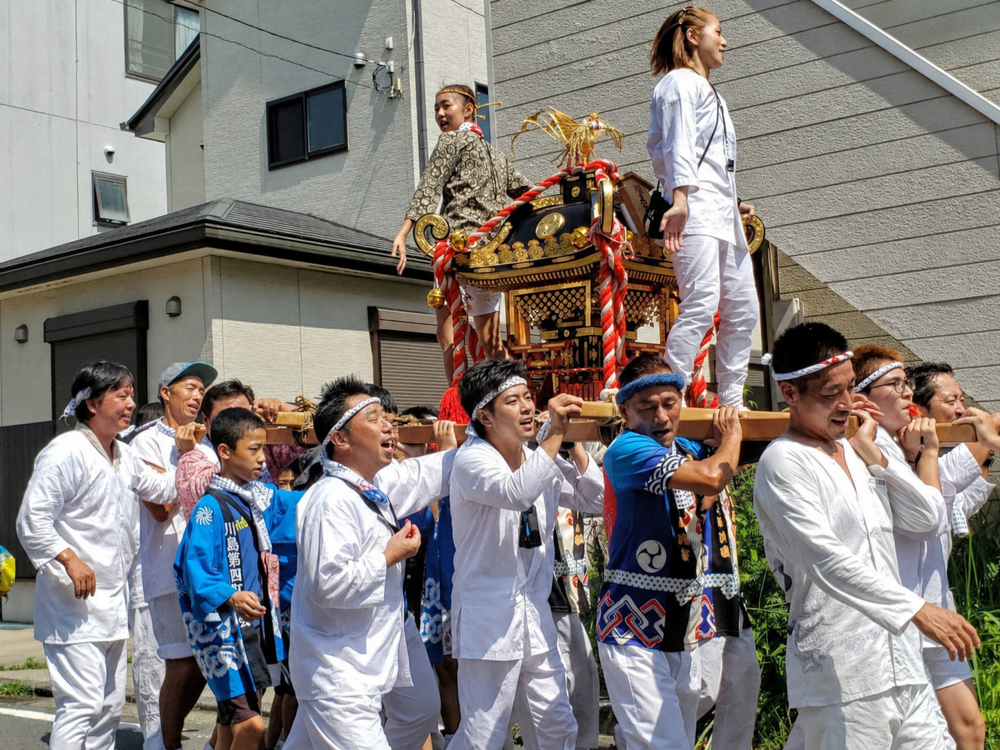

今年の夏祭りは9/12（土）・13（日）に開催決定です。演芸、盆踊り、神輿、ソーラン節、出店など、内容はこれから順次決めていきます。
出演・踊り・神輿・太鼓・お手伝い・親子ボランティアなど、地域の皆様の参加をお待ちしています。準備状況は「夏祭り準備だより」で順次お知らせします。
🅿️ 駐車場は東電置場が利用可能です。場所・利用時間・誘導方法などの詳細は、決まり次第お知らせします。
TAIKO
太鼓の会からの案内
今年の盆踊りで太鼓をたたいてみたい子どもたちを募集しています。初めてでも大丈夫。みんなで練習して、夏祭り本番を楽しく盛り上げましょう。
対象：小学生以上の子どもたち
場所：川島第四町内会館
持ち物：動きやすい服装・飲み物・タオル
- 7/26（日）午前9時から
- 8/2（日）午前9時から
- 8/9（日）午前9時から
- 8/16（日）午前9時から
- 8/23（日）午前9時から
- 8/30（日）午前9時から
PROGRESS
夏祭り準備だより
Vol.1 夏祭りに向けて準備中です
9月12日（土）・13日（日）の夏祭りに向けて、少しずつ準備が進んでいます。
更新日：2026年7月19日
現在、演芸、盆踊り、神輿、太鼓、ソーラン節、お手伝い、出店内容などについて、関係者で調整を進めています。決まった内容から順次、この特設サイトでお知らせしていきます。
演芸・ステージ出演内容や進行について、調整を進めています。
盆踊り・太鼓太鼓の会からの案内を掲載しました。子どもたちの参加も募集中です。
神輿・山車神輿の担ぎ手や、子どもたちの参加しやすい形を検討しています。
ソーラン節子どもたちが楽しく参加できる内容を検討しています。
お手伝い準備、片づけ、飲料ブースなど、できる範囲でのご協力を募集予定です。
お知らせ回覧、掲示、ホームページで順次お知らせしていきます。
JOIN / SUPPORT
参加してみませんか？
見るだけでなく、参加して、手伝って、みんなでつくる夏祭りへ
詳細はこれから決まりますが、「興味がある」「少しなら手伝えるかも」という声を募集しています。
CONTENTS
今年の見どころ
🎤演芸ステージ
歌・ダンス・バンドなど、地域の皆様が主役のステージです。
🏮盆踊り
みんなで輪になって楽しむ夏の定番。サークル参加も歓迎です。
🍧模擬店・交流
子どもも大人も立ち寄りやすい、にぎやかな交流の場を目指します。
🥁神輿・山車巡業
13日午前に神輿・山車巡業を実施します。大人も子どもも一緒に参加できる形を検討します。
🌊ソーラン節
子どもたちの元気な踊りで、会場をもっと楽しく盛り上げます。
👨👩👧👦家族で楽しむ
親子で参加・見学・お手伝い。家族で楽しめるお祭りに。
🤝地域でつくる
出演、踊り、準備、片づけ、ブース運営まで、地域みんなでつくります。
STAGE
演芸出演を募集します
歌・ダンス・バンド・楽器演奏など、会場を盛り上げる出演者を募集します。
募集内容
- 歌・カラオケ
- ダンス・キッズダンス
- バンド・楽器演奏
- 地域団体・子ども会などの発表
応募方法
申込方法、出演時間、締切は決まり次第掲載します。
現在は受付準備中です。
BON ODORI
盆踊りを一緒に盛り上げてください
夏祭りの夜を楽しくするため、盆踊りサークルや有志グループの参加を募集します。
🏮参加してほしい方
- 盆踊りサークル
- 地域の有志グループ
- 親子・ご近所同士の参加
- 踊りを覚えて一緒に盛り上げたい方
✨目指したい雰囲気
上手・下手ではなく、みんなで輪になって楽しむ盆踊りを目指します。初めての方も歓迎です。
JOIN US
参加・お手伝い 大募集！
見るだけでなく、参加して、手伝って、みんなでつくる夏祭りです。大人も子どもも、親子でも歓迎します。
今年も神輿で、町内を元気に。
大人も子どもも一緒に担いで、声を出して、夏祭りを盛り上げましょう。初めての方や親子参加も歓迎です。

🥁神輿の担ぎ手募集
大人も子どもも一緒に神輿を担いで、町内を元気に盛り上げましょう。
- 親子での参加も歓迎
- 初めての方も参加しやすい形を検討します
- 詳細は決まり次第お知らせします
🌊ソーラン節を踊る子ども募集
ソーラン節で会場を元気いっぱいに。子どもたちの参加を募集します。
- 地域の子どもたちの参加を歓迎
- みんなで楽しく練習・参加できる形を検討します
- 募集方法は後日掲載します
🧹準備・片づけサポート募集
会場づくり、備品準備、片づけなどを支えてくださる方を募集します。
- 短時間だけの参加も歓迎
- できる範囲のお手伝いで大丈夫です
- 地域で支える夏祭りを目指します
🥤飲料ブースなどのお手伝い募集
飲料ブースなどを手伝ってくださるボランティアも大募集です。
- 親子セットでのボランティア参加も歓迎
- 子どもと一緒にお祭りを支える体験に
- 運営内容は決まり次第お知らせします
募集方法・集合時間・担当内容は、決まり次第このページ、回覧、掲示等でお知らせします。
SCHEDULE
開催日程
9/12（土）宵宮・模擬店・演芸などを実施します。
9/13（日）午前神輿・山車巡業を実施します。担ぎ手募集は後日案内します。
9/13（日）本宮・模擬店・地域交流などを実施します。
※時間、内容、雨天時対応、交通整理、出店内容などは、決まり次第更新します。
REFERENCE
昨年のプログラムを参考にご紹介します
昨年の夏祭りプログラムを参考に、今年もにぎやかな2日間を計画していきます。正式な時間割は、内容が決まり次第このページでお知らせします。
宵宮のイメージ
夕方から夜にかけて、演芸・ステージ発表・盆踊りなどで盛り上がりました。
カラオケ楽器演奏バンドフラダンス盆踊り
本宮のイメージ
地域の皆さまの発表やダンス、ソーラン節など、幅広い演目で会場が一体になりました。
バトンダンス演歌ソーラン節ヒップホップ
今年につなげたいこと
演芸・盆踊り・神輿・お手伝いを通じて、大人も子どもも参加しやすい夏祭りを目指します。
出演募集踊り参加神輿親子参加運営協力
個人名や個人情報は掲載せず、昨年のプログラム構成のみを参考情報として紹介しています。
MOVIE
過去動画で雰囲気を見る
過去の動画で、第四町内会のにぎやかな夏祭りの雰囲気をご覧ください。
FAQ
よくある質問
詳細は調整中ですが、現時点でお伝えできる内容をまとめています。
Q. 夏祭りは誰でも参加できますか？
A. 川島第四町内会の皆さまを中心に、地域の方に楽しんでいただける行事として準備しています。
Q. 子どもも参加できますか？
A. はい。太鼓、ソーラン節、神輿など、子どもたちも参加しやすい内容を検討しています。
Q. お手伝いは少しだけでも大丈夫ですか？
A. 大丈夫です。準備、片づけ、飲料ブースなど、できる範囲でのご協力をお願いできればと考えています。
Q. 詳細はいつ分かりますか？
A. 決まり次第、この特設サイト、回覧、掲示などでお知らせします。
MAP / ACCESS
会場案内
川島町水道みち公園
会場は、川島町水道みち公園です。
会場案内、通行方法、ごみの分別などは、詳細決定後にお知らせします。
駐車場のご案内
駐車場は、東電置場が利用可能です。
場所・利用時間・誘導方法など、当日の詳しい案内は決まり次第このページでお知らせします。
VOICE BOX
夏祭り ご意見・ご協力BOX
夏祭りを、もっと楽しく・参加しやすくするために
夏祭りについてのご意見や、「出演してみたい」「神輿を担いでみたい」「少しなら手伝えるかも」といったご協力の声を募集しています。
夏祭りへのご意見
出演・演芸の相談
盆踊り・神輿・ソーラン節
準備・片づけ・ブース協力
※いただいた内容は、夏祭りの運営改善や参加調整の参考にさせていただきます。すべてのご意見への個別回答をお約束するものではありません。個人情報の入力は必要最小限でお願いいたします。